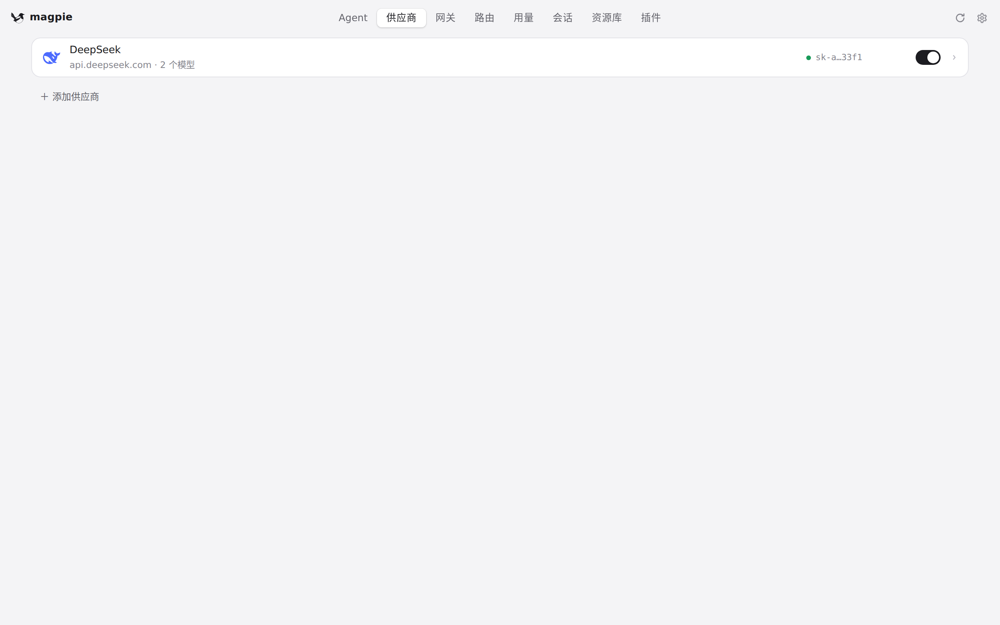
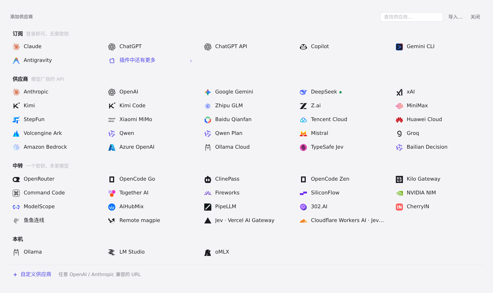
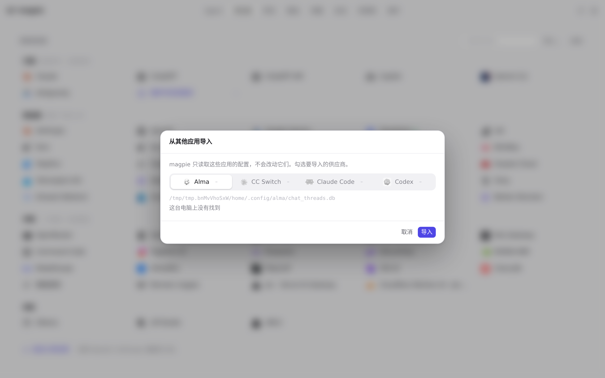

#879 界面预览
commit 69d2dd7 · 回到 PR · 供应商页新增「本地配置发现」提示：扫描 Alma / CC Switch / Claude Code / Codex 的可导入配置，无供应商时显示带数量与来源应用的醒目提示，已有供应商时在「＋ 添加供应商」旁显示紧凑的「导入本地配置（n）…」链接；点「忽略」把配置指纹写进 localStorage 并在重开窗口后继续隐藏。自动发现只取应用名与指纹，并让既有的导入清单默认只勾选被发现的配置。
红线是鼠标走过的轨迹，红色圆环是一次点击；底部文字是这一步在做什么。空格暂停，← → 逐段查看。

供应商页：本地配置发现出现的位置 · 供应商页：目前只有 DeepSeek，列表下方是「＋ 添加供应商」一行——本地配置被发现时，紧凑的导入入口出现在这一行

供应商页：本地配置发现出现的位置 · 面板里的「导入…」入口

供应商页：本地配置发现出现的位置 · 自动发现找到本地配置时打开的就是这个对话框，这些行就是被默认勾选的对象